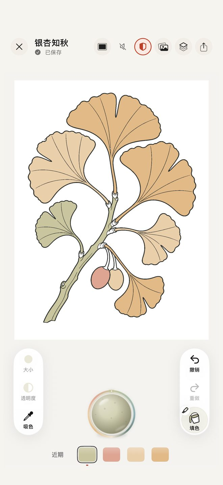
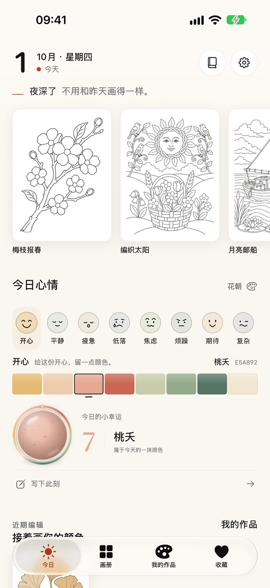
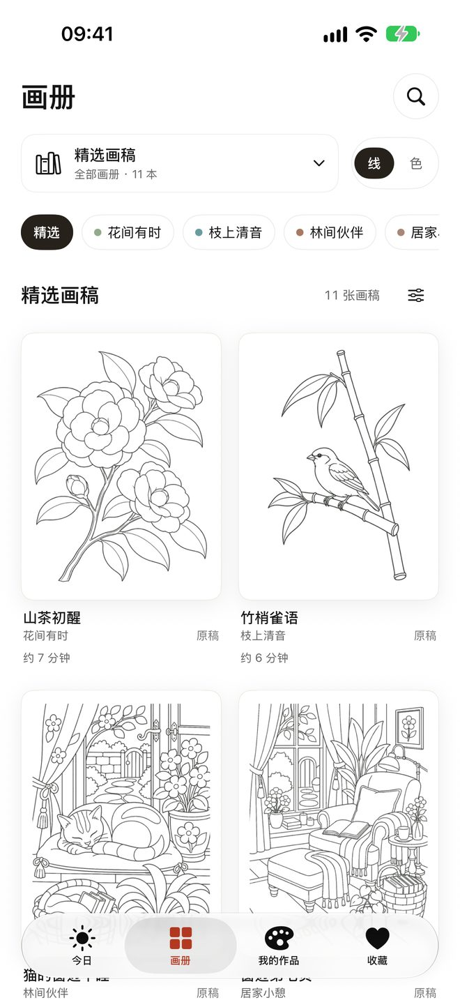
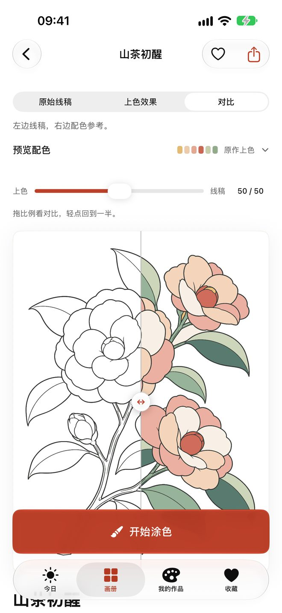
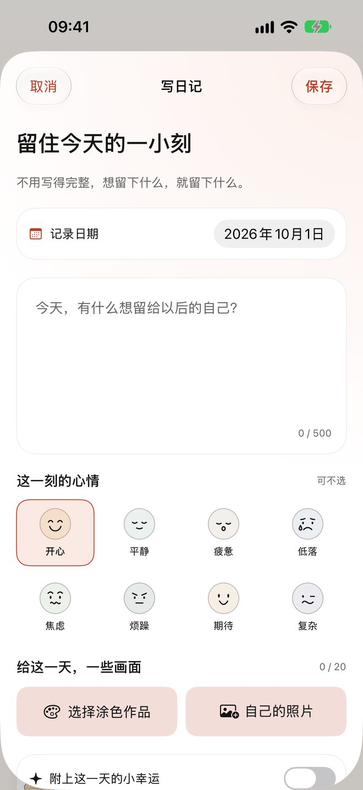
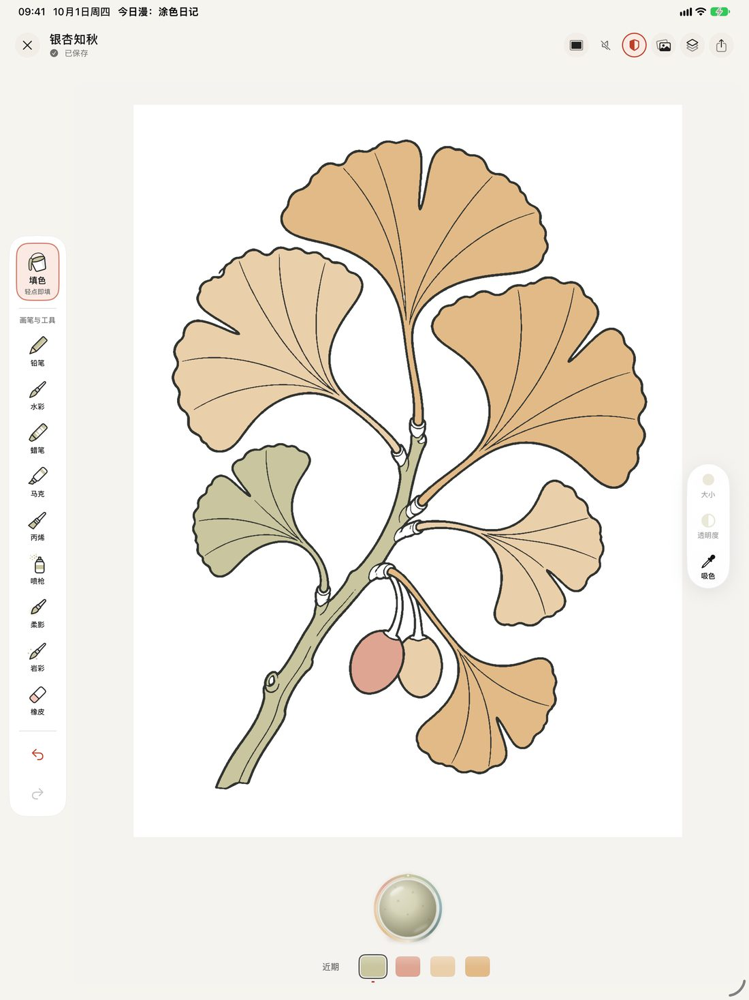

今日漫：涂色日记
慢慢涂色，记下今天的心情
挑一页画稿，随手涂几笔；再用几句话、一个心情或一张照片，把今天留下来。今日漫是 iPhone 与 iPad 上的涂色日记，作品和日记都只保存在你的设备上。
- 11 本画册
- 132 幅画稿
- 10 种画笔
- 无广告
- 不用注册
- 支持 iPad 与 Apple Pencil

每天一页，从一句话开始
打开就是今天的画稿，配一句不催你的话。选一个心情，领一颗当天的小幸运色；没涂完的作品，也在首页等你接着画。

11 本画册，132 幅画稿
花间有时、枝上清音、林间伙伴、居家小憩、海天漫游、四时雅趣、花窗纹样、幻想微境、田园街巷、食光手作、童话漫游——从一枝花到一整间小屋，每幅都标了大约要涂多久。
免费就能涂 12 幅入门画稿和每天轮换的一页。

不会配色？照着参考涂
每幅画稿都附一份配色参考。拖动滑块就能对比线稿和上色效果，也可以只借用它的几种颜色，涂出你自己的版本。

不必画完，也值得记下
写几句话，选一个心情，附上今天的作品或照片。日记可以单独上锁；也可以连接 Apple「健康」，用你记录的心情推荐颜色（可选，只读取，不写入）。

十种画笔，在 iPad 上更从容
填色、铅笔、水彩、马克、丙烯、蜡笔、喷枪、柔影、岩彩和橡皮，配合图层、色盘、撤销与重做。兼容的 iPad 支持 Apple Pencil，横屏竖屏都能画。
画完可以导出 PNG、分享卡片，或者生成一段绘画回放。

你的作品只属于你
不收集数据
不用注册账号，没有广告、统计 SDK，也不跟踪你。
保存在本机
每一笔都自动保存；随时可以导出 .colorbreathe 备份，换机时带走。
离线也能涂
涂色、日记和导出都不需要网络，只有购买和恢复购买要连接 Apple。
详见隐私政策。
免费下载，按需解锁
免费版可以涂 12 幅入门画稿和每日一页，使用全部画笔、日记与备份。想要完整画库、空白画布、导入自己的线稿，以及 4096 像素与透明背景导出，可以开通「完整创作权限」：月订阅或年订阅（符合条件的账户可免费试用 14 天），中国大陆另有永久买断。具体价格以 App Store 显示为准。
试用、续费与取消方法见帮助与支持。
界面一览
需要 iOS / iPadOS 26 或更高版本。界面截自 2.1 版本。